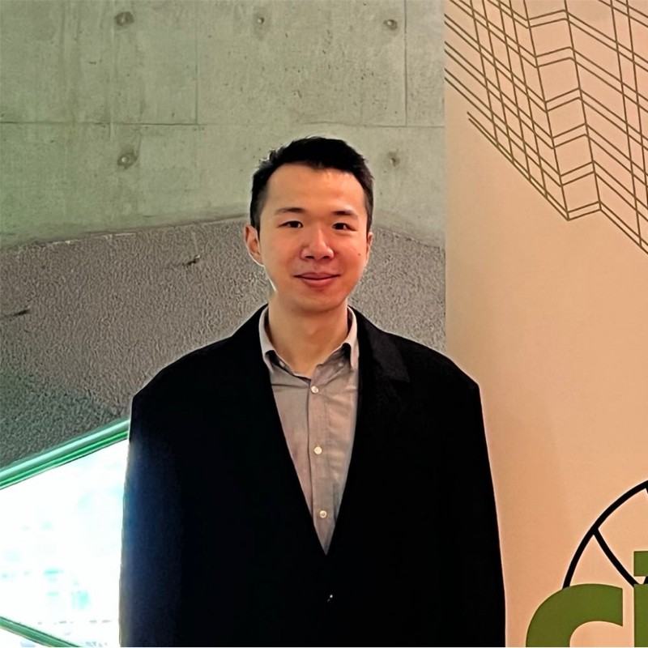

About ICON Lab
ICON Lab is a research group in the Department of Civil and Environmental Engineering at Monash University, dedicated to redefining how infrastructure is conceived, built, and operated. We develop intelligent construction systems guided by human-centric intelligence, integrating robotics, artificial intelligence, and automation to explore how humans and intelligent systems can work together safely, effectively, and adaptively in complex, real-world environments. By reimagining the planning, monitoring, and execution of construction processes, we push the boundaries of what is possible—toward a future where infrastructure is delivered through smarter, safer, and increasingly autonomous systems that augment human capability and support better decision-making across the built environment.
Team
Director
Yihai Fang
Dr Yihai Fang is a Senior Lecturer in the Department of Civil and Environmental Engineering at Monash University. He is the founder and director of the ICON Research Lab, where he leads research on developing next-generation construction systems that integrate robotics, artificial intelligence, and digital technologies to address fundamental challenges in construction and infrastructure delivery. Guided by a vision of embedding human-centric intelligence into construction automation, his work brings together physical systems, machine intelligence, and human decision-making to improve safety, productivity, and operational intelligence across the built environment.
Current Members

Dr. Yizhe Wang
Postdoctoral Research Fellow
Advancing Human-Robot Collaboration in Construction Structural Assembly through Task Optimization and Augmented Reality Assistance
Qishen Ye
Ph.D. Candidate
Enhancing Work Zone Safety Technology (WST): a performance-based evaluation framework considering human behaviours
Tyson Kieu
Ph.D. Candidate
Computer Vision-based Digital Twinning for On-site Scaffold Management
Junlin Wang
Ph.D. Candidate
A Knowledge-based Approach for Automated Crane Lift Monitoring and Productivity Analytics
Alumni
Projects
Loading projects…
News
Loading news…
Contact
Wellington Rd, Clayton, VIC 3800, Australia